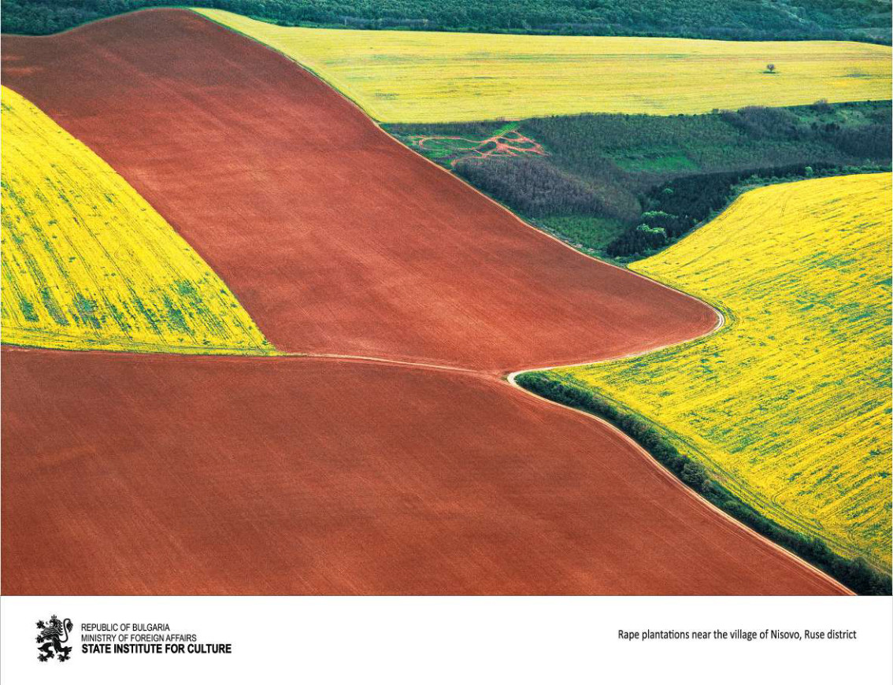

Aranyló táj
A Duna-síkság hatalmas mezőgazdasági területei, amelyeket a virágzó repce jellegzetes sárga színei borítanak. A térség termékeny földjei lenyűgöző geometrikus formákat és élénk színkontrasztokat rajzolnak ki a magasból.
Златен пейзаж
Обширни земеделски площи в Дунавската равнина, обагрени в характерните жълти нюанси на цъфтящата рапица. Плодородните земи на региона създават впечатляващи геометрични форми и ярки контрасти, които се виждат ясно от височина.
Golden landscape
Vast agricultural fields in the Danubian Plain, colored in the characteristic yellow hues of blooming rapeseed. The fertile lands of the region create impressive geometric patterns and vivid contrasts, clearly visible from above.